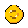

UNAL: Lucha por el Territorio
Selecciona tu Facción:
🛡️ ESMAD
🔥 Capuchos
✊ Minga
Esperando...
T: 0
Acciones Restantes:
0
💰 Recursos

0
⚙️ Tropas (
Nivel 1
)
Vida Base:
Ataque Base:
Espacio Base:
Mejorar Tropa (Max N10)
🛠️ Acciones
Ataque
N1
Mejorar (Max N3)
Defensa
N1
Mejorar (Max N3)
Producir
N1
Mejorar (Max N3)
⚡ Habilidad
Usar Habilidad
Terminar Turno
Jugar de Nuevo